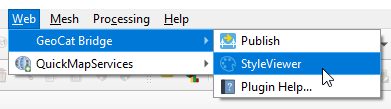
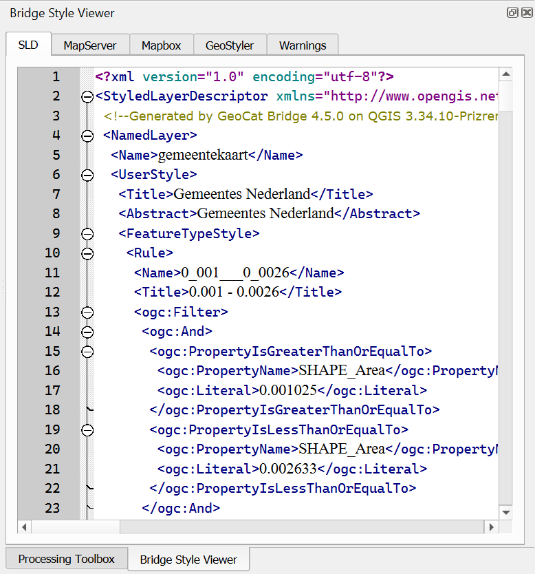

StyleViewer Panel
GeoCat Bridge offers a way to preview a layer style (symbology) in several different formats using the StyleViewer.
You can open the StyleViewer panel by clicking StyleViewer from the GeoCat Bridge menu:
Alternatively, you can open the panel using View > Panels > StyleViewer in the QGIS menu bar.
A dockable panel will now be displayed (initially on the right side of the screen) that looks similar to this:
If you wish to close the StyleViewer, click the close button (x) in the upper-right corner of the panel or uncheck the View > Panels > StyleViewer item in the QGIS menu bar.
Currently, StyleViewer supports the following style formats:
SLD (XML): used by GeoServer
MapServer style (plain text): also known as Mapfile
Mapbox style (JSON): used for vector tiles
GeoStyler (JSON)
The StyleViewer is context-aware, meaning that it will show style previews for the currently selected layer in the QGIS Layers panel:
For more information about how Bridge handles symbology and which style elements are supported, please read the Supported Symbology section.
Note
If the layer is not supported by Bridge (see Supported layer types), nothing will be shown.
If there were issues during the style conversion process, these will be displayed on the Warnings tab.